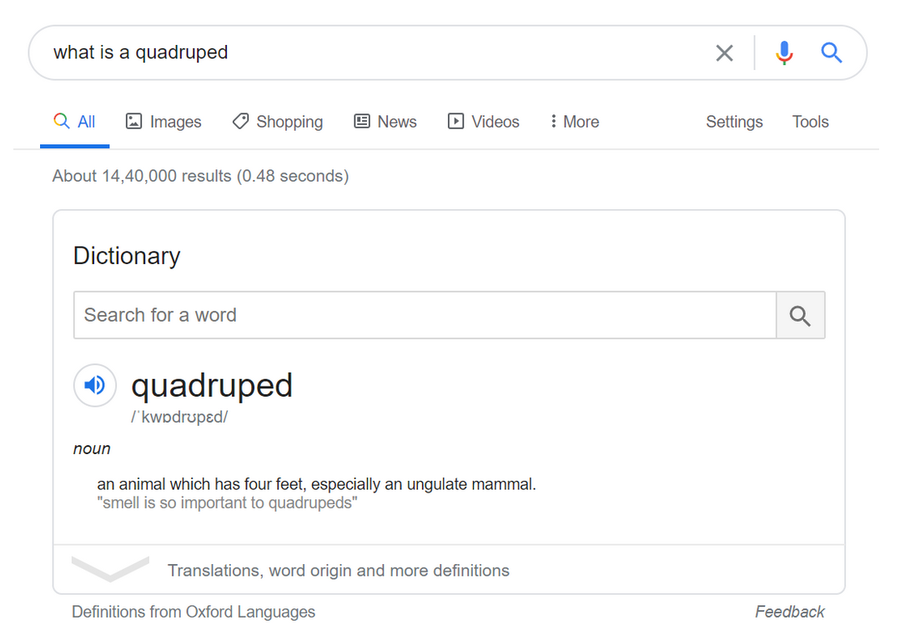

Hey everyone! I hope you're doing good.
Today we will diverge a bit from our usual posts, and will discuss what's cooking in the Robocon Lab!

Upon running a quick Google search, this is what you get.
The word (like many others out there) is a combination of the Latin words "quad" (four) and "pes" (feet).
That is, a creature with four feet.
Just that being a robotics team gives us the right to call our "quadrupedal robots" as quadrupeds!
A very popular example that you might have come across recently is Boston Dynamics' Spotx
The "futuristic robot dog" turned the heads of many, when famous names in the tech-entertainment industry such as Adam Savage (Mythbusters/Tested) and Lew Later (Unbox Therapy) reacted to the bots.
Now that we know what quadrupeds are, let's dive into why they are required, and how are they much more useful than merely being a tech reviewer’s toy.
The most striking feature of these robots is the four legs on which they run. Given that realising such a bio-inspired design is a big challenge, why not stick with wheels?
There is a solid line of reasoning behind it
Thanks to the genetic processes, biological organisms try to optimise their body structures based on their environment. This ensures a high probability of survival in the conditions the organism thrives (e.g. wings for flight, fins for swimming, horns for combat). If wheels were so good for our movement, we wouldn’t have bothered lifting our legs! But legs have served essential functions, and in several situations, have proven to be better than wheels.
Even if wheels are better for flat terrains and consume lesser energy than legs, they don't work as well when it comes to rough terrains like forests and hilly areas. When the engineers wanted to get robots out of controlled lab environments, they started looking for inspiration in the animal kingdom. The world is undulated, and you can't always flatten things out. Sometimes, you just have to adapt. And the legs help us do just that.
Now the challenges? Oh, don't get me started! You have to ensure stability while moving, resistance to obstacles, both on and off the ground (control systems), making sure you are moving the right way (gaits) and knowing how to get back up when you fall down (self-righting), all powered by state-of-the-art Artificial Intelligence (deep learning).
Sure thing, it involves a lot of work, but trust me, the end product is just as rewarding!
This brings us to; when did roboticists realise the need for such a thing? When did they get out of their heads and tried to think outside the box (or in this case, let's say, the wheel)
While we have evidence of the first legged creatures sometime 500 million years ago, the idea of using motorized legs to move robots was only thought of in the 1960s. The first legged robots were the hexapods of the 1980s, owing to their stability of motion.
Boston Dynamics started out from the CMU Lab on the campus of Massachusetts Institute of Technology. They started developing BigDog, their first quadruped robot, back in 2005. Since then, we have seen a boom in research around legged robots in college campuses across the globe, be it MIT's Cheetah or Stanford's Doggo.
Ever since the public launch of Spot and its SDK, such robots are gradually paving their way in the defence, medical and disaster management fields, and their importance is being increasingly noticed.
There are several Indian colleges such as IIT Roorkee and IIT Mandi, who are trying just as hard to make these legged robots a reality. And we are one of them.
Our quadruped, which we have named DIPLOID (Dynamic Image Processing and LOcalization Integrated Dog) for Flipkart GRiD 2.0 is already through the design phase. The proposed chassis size is 41x27x41 cm (near about the size of a dog) and a smaller version is the size of a kitten. Having said that, the prototype actually looks pretty darn cute! Here, have a look.
We have broadly divided the work into three subsystems.
Each of the subsystems plays its part in making the bot a reality. We are going the design → simulation → manufacturing → testing type of cycles for evolving the project.
The remote working environment has obviously disrupted our workflow, but just like our robots, we are righting ourselves in these trying times and are working as efficiently as we possibly can. We have arranged a 3D printer with whatever we had, and shipped it to Sachin's (Kaptaan Sahib’s) home. We are independently working on the CADs, and then are printing and trying out those designs in physical situations.
As I previously mentioned, we have submitted our designs to Flipkart GRiD 2.0, a nation-wide robotics competition organized by the e-commerce giant. We are currently pitched against 30 odd teams around the country for Round 3. Results awaited! 🤞
Leaving the competition aside, we are adopting a research-based approach to our projects.
We will keep working on improving our bot as long as it's feasible.
Implementing simulations to real-life scenarios is the toughest part, and that's where the fun of robotics lies! 😉
Hope you enjoyed reading about legged robots. The pace of research on these robots is picking up its pace with every passing day, and it won't be long when we all have our own "pet robots" at homes, bringing in groceries from supermarkets, and taking care of all the routine chores, while you are busy saving the world from bigger problems!
Stay tuned and subscribe for more insights into our projects and interesting developments and the usual blog posts which can help you get started on your own robotics journey.
Thanks for reading!